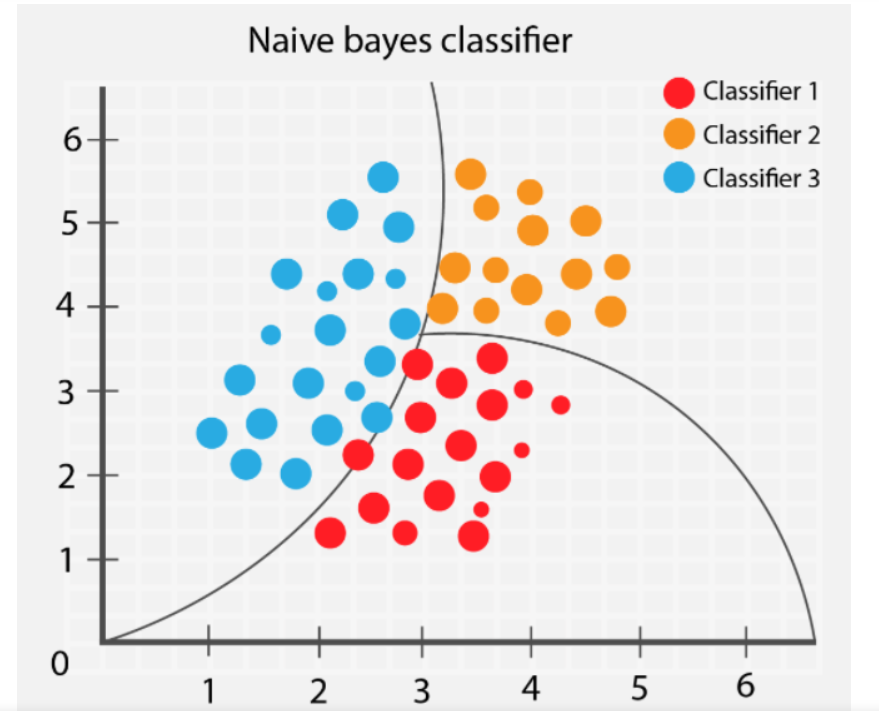
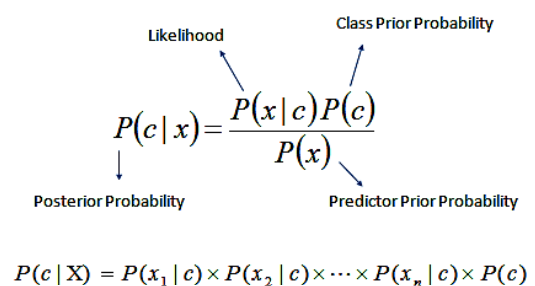

Naïve Bayes is a family of probabilistic classifiers built around Bayes’ Theorem and the idea
that features become conditionally independent once the class label is known (Fig. 1). Even though this
assumption is clearly an oversimplification, the model ends up performing surprisingly well in
real‑world settings, especially when the data is high‑dimensional. In practice, Naïve Bayes
learns how likely each feature is within each class and combines those likelihoods with the
class priors to compute a posterior probability for every possible label, (mathmatically shown in Fig. 2). The version most
relevant to this project is Multinomial Naïve Bayes, which is commonly used for text or
count‑based features because it models term frequencies and other non‑negative numeric
representations extremely efficiently.

Figure 1: Naïve Bayes classifier for computing class probabilities.
Source

Figure 2: Mathmatical overiview of Bayes Theorem.
Source
NB models rely on estimating conditional probabilities. If a feature never appears
in a class during training, its probability becomes zero, which would zero‑out the
entire posterior for that class. Laplace (add‑one) or Lidstone (add‑α) smoothing
prevents zero probabilities by adding a small constant to all feature counts.
This ensures that the model remains robust and can handle previously unseen terms. Alongside the
multinomial version, there is also Bernoulli Naïve Bayes, which is designed for binary
presence/absence features rather than counts. Bernoulli NB is useful when the data naturally
reflects whether a feature occurs at least once, such as keyword flags or one‑hot encoded
variables—making it a flexible alternative depending on the structure of the dataset.
Data Preparation
Naïve Bayes is a supervised learning method, which means it requires a dataset
with clearly defined labels. The original biomedical metadata dataset did not
contain a natural outcome variable, so I created a binary label based on citation
impact. Papers with citation counts above the median were labeled
high_cited, and those below were labeled low_cited.
This converts the dataset into a supervised classification problem suitable for
Naïve Bayes.
Only labeled observations can be used for supervised modeling, so any rows with
missing values in the predictor or label columns were removed. The predictors used
in this analysis include publication year, reference count, citation count,
influential citation count, open-access status, venue, journal name, and the
primary field of study. These metadata features form the input variables the model
uses to learn patterns associated with high- versus low-citation papers.
After labeling the dataset, I created a disjoint Train/Test split. The
Training Set (80%) is used to estimate the Naïve Bayes parameters
(class priors and conditional likelihoods), while the
Testing Set (20%) provides an unbiased evaluation of how well the
model generalizes to unseen data. The two sets must be completely disjoint to
prevent information leakage. If the model sees the same papers during both training
and testing, the accuracy would be artificially inflated.
Below is the code used to train and evaluate the Multinomial Naïve Bayes model.
The full script is linked for reference, and a short excerpt is included here
to illustrate the workflow. If using Python/Sklearn, all features must be numeric.
R can handle mixed data types natively.
# Example (Python)
from sklearn.model_selection import train_test_split
from sklearn.naive_bayes import MultinomialNB
from sklearn.metrics import confusion_matrix, accuracy_score
X_train, X_test, y_train, y_test = train_test_split(X, y, test_size=0.2)
model = MultinomialNB()
model.fit(X_train, y_train)
preds = model.predict(X_test)
Screenshot of the Naïve Bayes training code.
Source: PASTE_URL_HERE
Results
After training the model, I evaluated its performance on the Testing Set.
The confusion matrix summarizes how many predictions were correct versus incorrect
for each class, while the accuracy score provides an overall measure of performance.
These results help determine how well Naïve Bayes captures the structure of the data.
Confusion matrix for Naïve Bayes predictions.
Source: PASTE_URL_HERE
Visualization of model accuracy on the Testing Set.
Source: PASTE_URL_HERE
Accuracy: INSERT_VALUE_HERE
Conclusions
Overall, the Naïve Bayes model provided a clear baseline for understanding how the features in
this dataset relate to the target labels. The model performed well on classes with distinctive
feature patterns and struggled more with classes that had overlapping distributions. These
results highlight both the strengths and limitations of Naïve Bayes: it is fast, interpretable,
and effective for high‑dimensional data, but it can be sensitive to violations of the
independence assumption.
From a topic perspective, the model helped identify which features were most predictive and
which categories were harder to distinguish. This provides a foundation for comparing Naïve
Bayes to more complex models later in the project, such as Decision Trees, SVMs, and Neural
Networks.